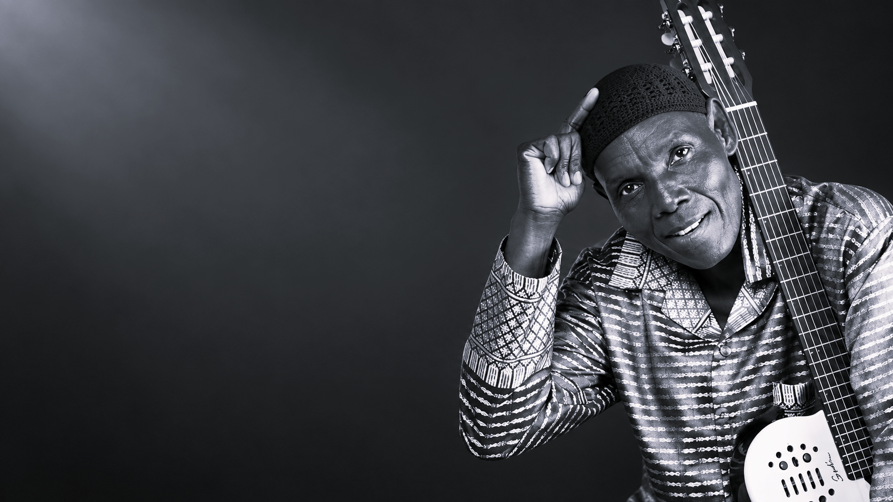

1952
Born in Highfield
Oliver Mtukudzi was born on 22 September 1952 in Highfield, in what was then Southern Rhodesia.

“My music is not for the government, my music is for the people.”
The Man Behind The Music
Oliver “Tuku” Mtukudzi became one of Zimbabwe's most influential musicians, recognised for his distinctive voice, guitar playing and ability to communicate everyday experiences through music. His work drew from Zimbabwean traditions while developing a sound that became widely known as Tuku Music.
His professional journey gained momentum during the 1970s when he performed with the Wagon Wheels. He later established himself with the Black Spirits and built a career that reached audiences throughout Zimbabwe, Southern Africa and eventually around the world.
Mtukudzi's music frequently explored family, relationships, social responsibility, illness, dignity and the challenges faced by ordinary people. Rather than separating entertainment from social commentary, he used storytelling and melody to make difficult subjects approachable.
His influence extended beyond recordings and performances. Through advocacy and humanitarian work, including his role as a UNICEF Regional Goodwill Ambassador, he used his public platform to support young people and speak against issues including discrimination, child marriage and HIV-related stigma.
Life & Legacy
Oliver Mtukudzi was born on 22 September 1952 in Highfield, in what was then Southern Rhodesia.
His professional career gained wider recognition after joining the Wagon Wheels, a group that also featured Thomas Mapfumo.
The release of Ndipeiwo Zano helped establish him as a major Zimbabwean recording artist.
Mtukudzi continued recording and performing, becoming one of Zimbabwe's most recognised musicians.
The album Tuku Music strengthened his international profile and introduced his music to wider audiences.
He was appointed UNICEF Regional Goodwill Ambassador for Eastern and Southern Africa, using music and advocacy to support young people.
Oliver Mtukudzi died in Harare on 23 January 2019, leaving behind an influential musical and cultural legacy.